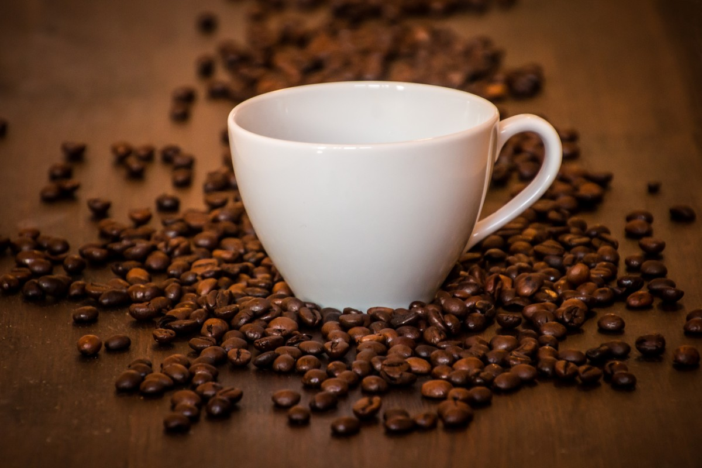
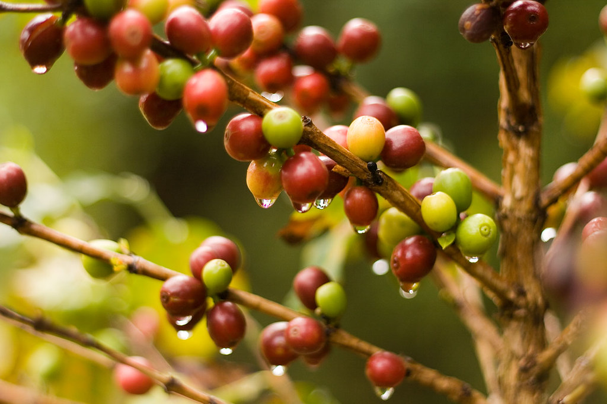

Aqui no café Leoni você encontra uma variedade de cafés que fazem parte do seu gosto. Venha nos visitar e saborear um café de qualidade feito com muito amor e carinho


A loja está localizada na cidade de Nova Fátima, Paraná, rua Nestor Cendom Garrido, n 195.